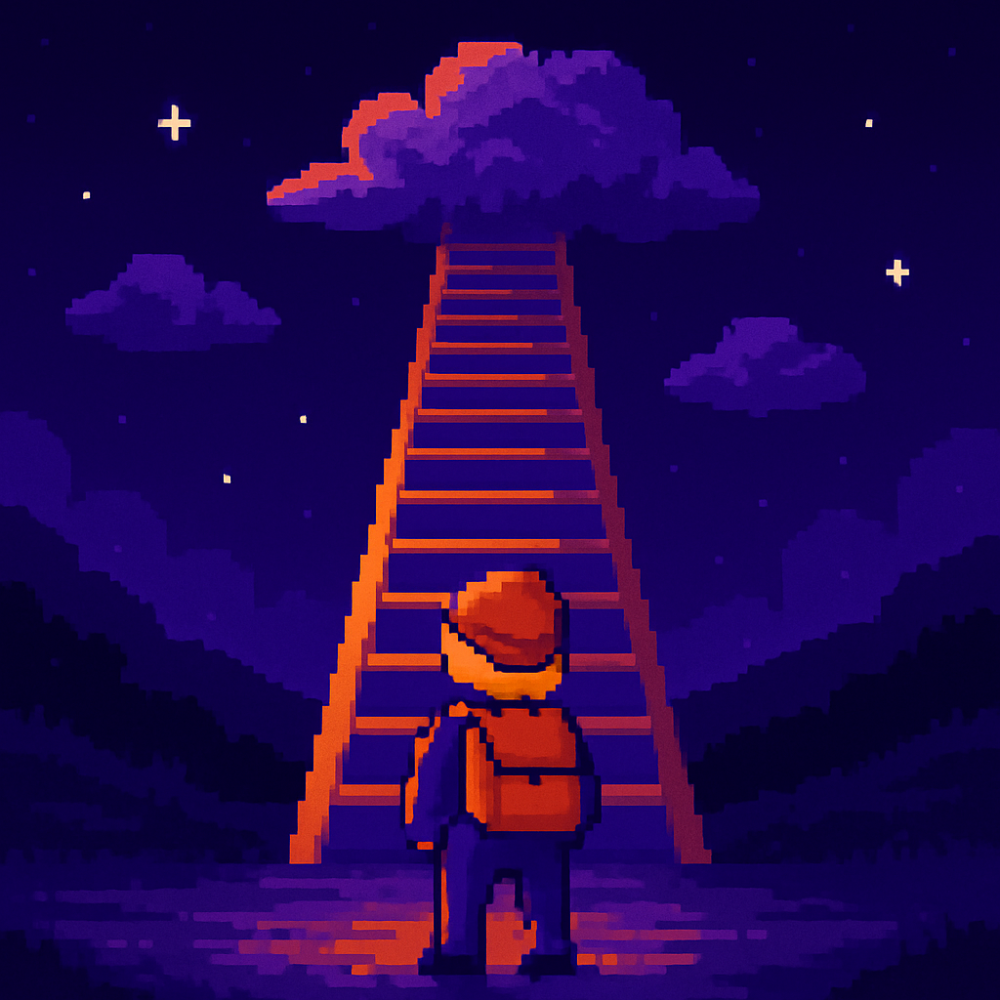

Фритрек и нулевой спринт: Подготовка к работе
</HTML>

Это было самое начало пути. На этом этапе важно было проникнуться основами и настроиться на учёбу.
Уже нулевой спринт оказался для меня трудноват. Были сомнения: продолжать ли? А вдруг не справлюсь с нагрузкой? А вдруг на работе задач навалится? И ещё примерно миллион сомнений.